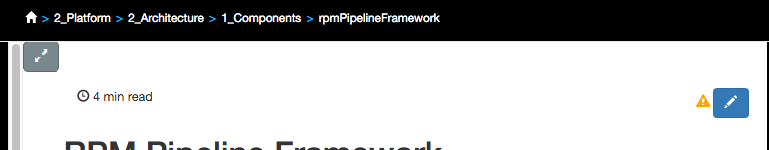
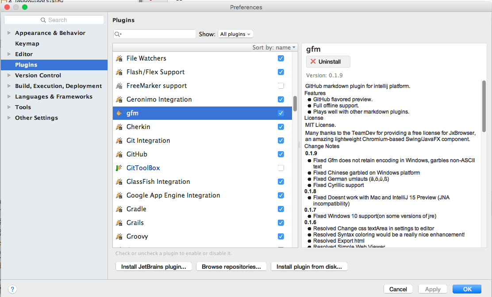
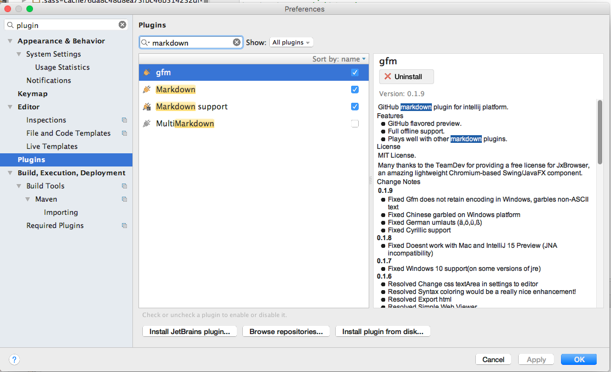

Contents
- Introduction
- Prerequisites
- Updating Content within GitHub
- IntelliJ Local Setup
- Atom Editor Local Setup
- For Further Reading
Introduction
The success of Cube U relies on the active contributions of developers.
As a developer there are multiple ways in which you can update content:
- Update Content within GitHub
- Update Content from IntelliJ IDE
- Update Content from alternative editor such as Atom
This section provides the steps to setup and run in these modes.
Prerequisites
- GitHub Account
- Access provided to BUE organization and CubeU
- Forked CubeU site
- Go to the Cube U Github page
- Fork your own copy of Cube U
Updating Content within GitHub
Any CubeU content can be directly updated using from your CubeU fork.
Page Edit Button
CubeU displays an Edit button on each Page (except for Summary pages) which takes
you into edit mode in GitHub.

The link to edit content from CubeU is only available from your fork. It does not
make sense to show it when you are running from a local server. The button is also disabled in BUE to reinforce the workflow in which content should be edited on your fork.
Steps
-
Click on Edit content link from CubeU page which takes you to your forked copy of CubeU in GitHub
-
Commit your change(s)
-
Submit a PR to the BUE/CubeU repository
-
Assuming your PR has been merged, your changes will show up in BUE/CubeU.
Style changes and individual content pages will show up quickly.
Structural changes such as moving a page will take longer as the hierarchy must be rebuilt.
IntelliJ Local Setup
Cube U utilizes GitHub Pages which uses Jekyll. It is advantageous to have your own local Jekyll server for updating CubeU content, which can make for a shorter development cycle.
This provides you with great flexibility to search/replace and review your changes as you do with your CUBE source code. If you desire, you can create an additonal IntelliJ project and keep it open alongside your normal development project.
Setting up a local Jekyll environment has been packaged into CubeU. For instructions, visit the project's README.
Markdown Plugins
It is recommended that you setup plugins to enhance your Markdown development workflow.
Standard Markdown
This options gives you a simple Markdown editing editor with html preview pane. Download these free plugins for basic editing and rendering:
- Markdown
- Markdown Support
- Gfm (GitHub Flavored Markdown)
The Gfm plugin isn't mandatory but will enforce a GitHub Flavor when rendering:

Enable these plugins:

Viewing Markdown provides a rendered tab view next to your source code tab:

MultiMarkdown
The second option is to download a more advanced, fee based plugin called MultiMarkdown.
The plugin is available with full functionality for a trial period and then reduces to a more limited set of features after the trial. Functionality provides a side-by-side rendering of Markdown and rendered content and many nice
convenience functions to ease content creation and rendering within IntelliJ. It
is also actively maintained and the developer is extremely responsive to suggestions and bug reports.
Download Plugin: 
Enable plugin, but make sure to disable the Markdown, Markdown Support and Gfm plugins:

Here's how the viewer looks:

Atom Editor Local Setup

Users without IntelliJ licenses may find that the Atom Editor is a fitting alternative for editing and promoting CubeU changes.
Atom was created by the GitHub team and is supported by an active community of plugin contributors. Atom does provide a nice development environment with powerful plugins, such as Markdown linters. We are planning to package an Atom setup for CubeU in PI8.